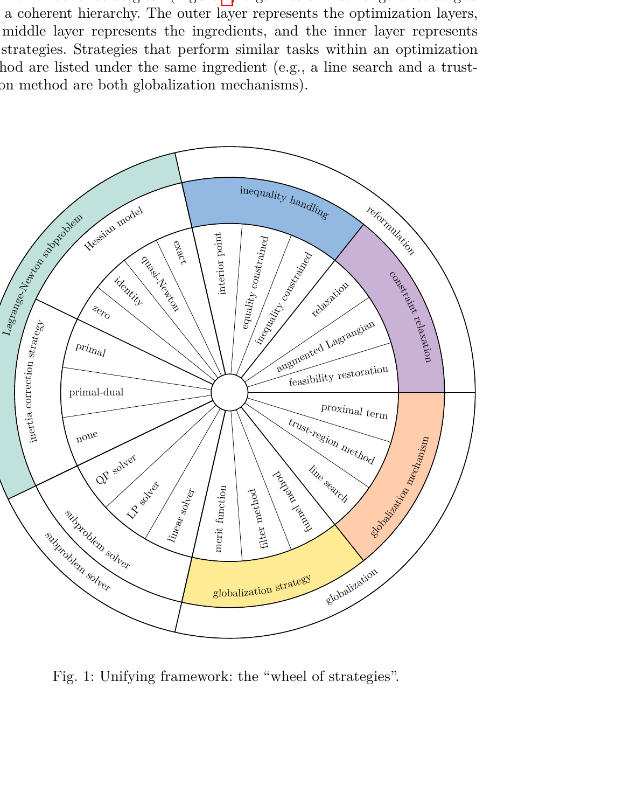
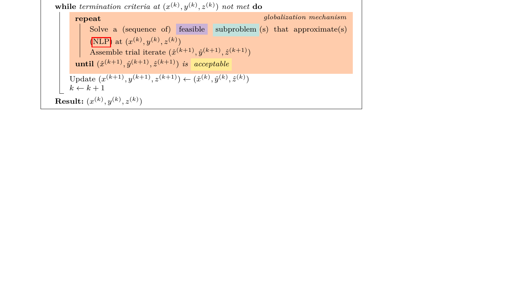
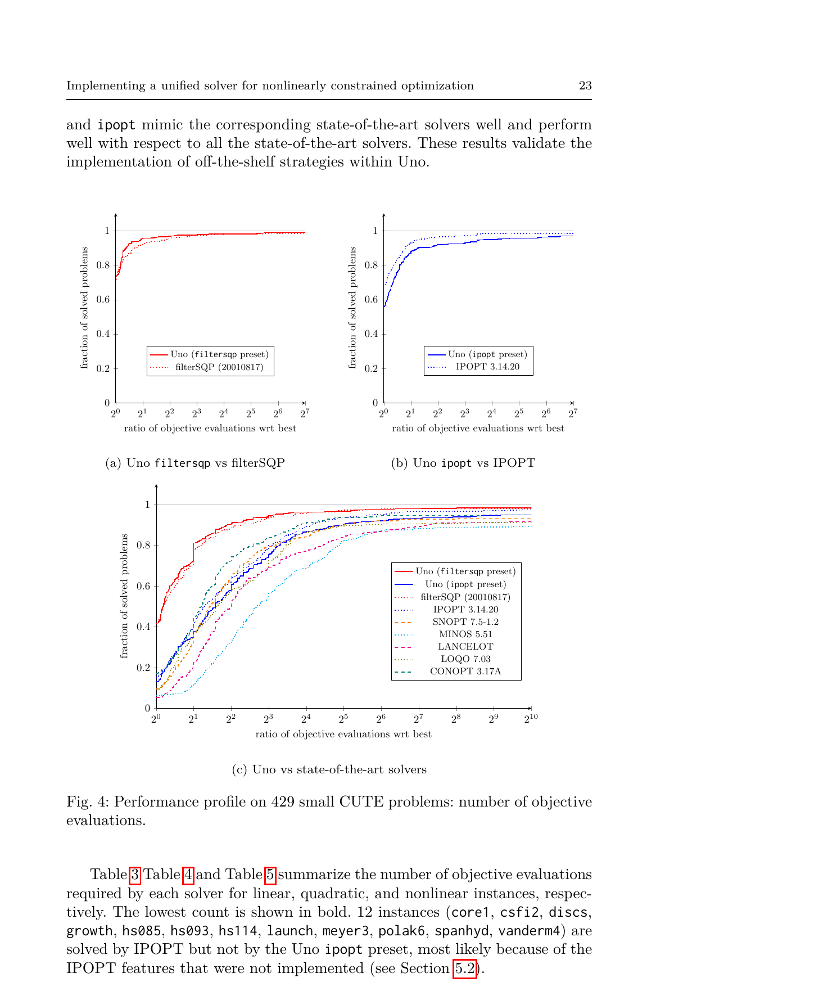
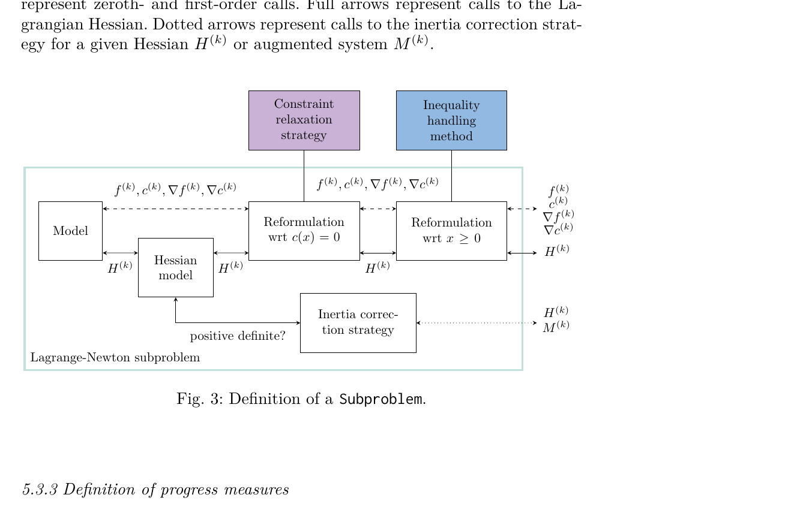

非线性优化求解器那么多（IPOPT、SNOPT、filterSQP、CONOPT……），为什么每个都要从头写？
求解非线性约束优化问题（NLP）有两大流派：序列二次规划（SQP）和内点法（IPM）。表面上它们差别很大——SQP 每步解一个 QP 子问题，IPM 在目标函数里加一个 barrier 项。但仔细看它们的算法结构，大量组件是共享的：都要算搜索方向，都要做全局化（line search 或 trust region），都要处理不等式约束，都要修正 Hessian 的惯性。
问题是：现有的求解器都是各自为政的整体实现。IPOPT 是 IPOPT，filterSQP 是 filterSQP，想试一个新的全局化策略？要么从头写一个求解器，要么在某个现有求解器里大改。想比较 filter 方法和 merit function？要比较两个完全不同的代码库，控制变量几乎不可能。
这既浪费开发精力，也阻碍了算法研究——研究者有一个新想法（比如新的约束松弛策略），没有地方干净地插进去测试。
现有的求解器像一体成型的玩具——IPOPT 是一辆跑车，filterSQP 是一辆越野车。都能开，但你没法把跑车的引擎装到越野车上试试。
Uno 的做法是把求解器拆成乐高积木。它定义了八个"零件"，每个零件有统一接口，可以自由组合。换一个零件不需要改其他七个。
Uno 把所有 Lagrange-Newton 类方法拆成四层、八个组件：

关键设计：这八个积木之间的接口是固定的。每个积木只需要实现自己的接口，不需要知道其他积木是什么。所以你可以把 IPOPT 式的 barrier 方法和 filterSQP 式的 filter 策略组合在一起——这种组合以前从来没有作为软件存在过，因为没人写过这样的求解器。

在 429 个 CUTE 测试问题上，Uno 提供了两个预设配置：filtersqp（模拟 filterSQP 求解器）和 ipopt（模拟 IPOPT）。

几个关键数字：
| 求解器 | 目标函数评估次数（几何均值） |
|---|---|
| Uno filtersqp | 18.08 |
| filterSQP | 18.73 |
| IPOPT | 34.63 |
| Uno ipopt | 48.45 |
| SNOPT | 61.02 |
| CONOPT | 43.15 |
| MINOS | 159.78 |
| LANCELOT | 92.27 |
Uno 的 filtersqp 预设甚至比原版 filterSQP 略好（18.08 vs 18.73）。ipopt 预设比原版 IPOPT 差一些（48.45 vs 34.63），因为有些 IPOPT 特性（二阶修正步、scaling、迭代精化等）还没实现。
代码量约 10,000 行 C++17，MIT 许可证开源，支持 C/Julia/Python/Fortran/AMPL 接口。
把非线性优化求解器拆成八个独立组件，每个组件定义为一个抽象接口，具体策略是它的实现（子类）。
USB 接口标准。不管你插的是键盘还是摄像头，只要符合 USB 协议就能用。Uno 的八个组件各自有"接口协议"——比如全局化机制只需要实现 compute_acceptable_iterate()，不管你内部是 line search 还是 trust region。
这个分解让策略组合变成了笛卡尔积。八个组件各有几种实现，理论上能自动生成上百种不同的求解器配置。其中一些组合以前从来没有作为软件存在过——不是因为理论上不行，纯粹是因为没人把代码写成这种模块化结构。
策略决定"接不接受这一步"（filter 方法或 merit function），机制决定"步长怎么算"（line search 或 trust region）。这两个概念在大多数教科书和求解器里是耦合的。Uno 把它们拆开了。
策略是"录取标准"（GPA 还是综合评估），机制是"考试方式"（笔试还是面试）。你可以用 GPA 标准配笔试，也可以用综合评估配面试。原来的求解器把录取标准和考试方式绑死了；Uno 让你自由搭配。
这是论文对优化算法理论的一个贡献——不只是软件工程上的模块化。它说清了：filter + trust-region、filter + line-search、merit + trust-region、merit + line-search 四种组合都有理论收敛保证，但之前只有两三种被实现过。
这个发现的力量在于它改变了看问题的方式。以前我们说"SQP 和 IPM 是两类方法"，现在应该说"SQP 和 IPM 是同一个框架的两种参数化"。SQP 用 active-set 处理不等式 + QP 子问题求解器；IPM 用 barrier 处理不等式 + 线性系统求解器。其余组件（全局化、惯性修正、约束松弛）完全通用。
这不只是学术观察。它直接导致了一个实用后果：你可以用 30 秒生成一个"filter + barrier + trust-region"的求解器——这种组合在此之前不存在于任何软件中——然后在你的具体问题上测试它是否比标准配置更好。
选题非常好。优化求解器领域确实存在大量重复劳动，每个新求解器都从头实现相似的功能。用软件工程的思路把算法模块化，是一个应该很早就有人做的事情。Vanaret 和 Leyffer 都是优化领域的资深研究者，这个方向的判断力值得信赖。
方法清晰且有深度。八个组件的选择不是随意的，论文在 Section 3-4 里系统梳理了现有方法，展示了每种方法如何映射到这八个组件上。Table 6（统一视图表）把十几个 SOTA 求解器全部用八个组件来描述，一目了然。这个统一视图本身就是一个贡献。

实验设计得当。Performance profile 是比较优化求解器的标准工具。filtersqp 预设和原版 filterSQP 的曲线几乎重合，证明模块化实现没有引入性能损失。和七个 SOTA 求解器的对比也很全面。诚实之处在于：ipopt 预设比原版 IPOPT 差，论文明确列出了哪些 IPOPT 特性没实现（二阶修正步、scaling、迭代精化等），不藏短板。
不足之处。第一，只用了 429 个小规模测试问题（CUTE 集）。工业级问题（变量数千、上万）的表现没有测试。模块化设计会不会引入额外开销（虚函数调用、间接寻址），在大规模问题上放大？第二，论文声称策略可以自由组合，但也承认有些组合"不收敛甚至不合理"（比如内点法 + trust region 目前被禁止）。哪些组合有理论保证、哪些只是软件上能跑但没有收敛证明，没有系统讨论。第三，缺少墙钟时间的比较——只比了目标函数评估次数，没比实际运行时间。模块化带来的代码抽象可能有运行时开销。
写作水准高。Section 6 用两个完整的彩色伪代码展示了 trust-region filter SQP 和 line-search filter IPM 的完整算法，颜色编码对应八个组件，非常直观。策略轮盘图（Figure 1）也设计得好。
迁移："把看似不同的算法拆成共享组件 + 差异化插件"的思路适用于任何算法家族密集的领域。比如化工模拟中的热力学模型——PR、SRK、PC-SAFT 表面上公式完全不同，但计算流程（纯组分参数 → 混合规则 → 状态方程求解 → 性质组装）是共享的。这正是 GPUTherm 的算子分解在做的事——Uno 提供了一个更成熟的参考框架。
混搭：Uno 的"自动生成策略组合"能力和 AVO 的"AI agent 自主优化"能力结合起来很有想象力。让 agent 在 Uno 的组合空间里搜索——对给定的问题类别，哪种八组件配置最优？这比让 agent 从零写求解器代码效率高得多。